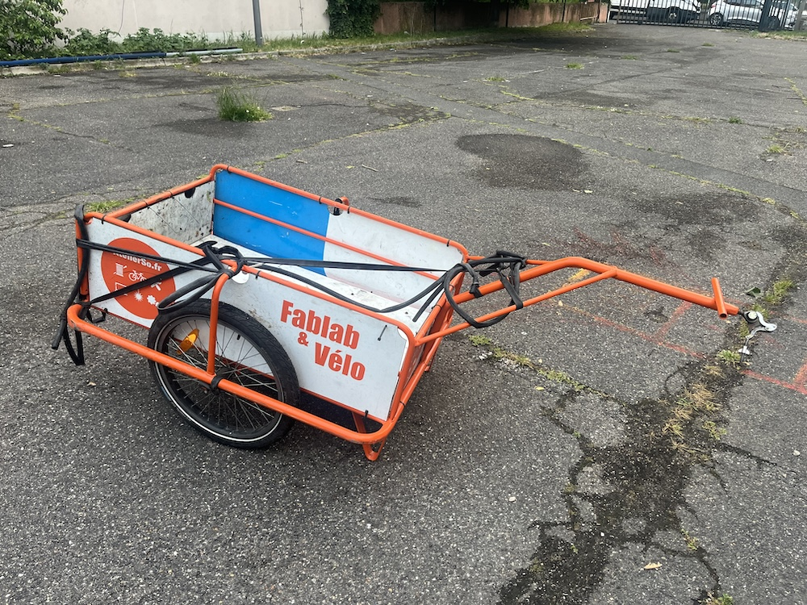

Rémorques en libre service
L'Atelier Solidaire a mis en place un service de réservation de remorques en libre service. Les adhérents de l'atelier peuvent – sur demande préalable – utiliser cette plateforme pour réserver un créneau puis recevoir par mail les instructions pour récupérer une remorque.
Pour pouvoir utiliser la plateforme et ainsi utiliser une remorque, vous devez suivre la procédure suivante :
- Vous rendre à l'atelier, adhérer à l'association et vous inscrire au programme de réservation. Bien conserver votre numéro d'adhérent.
- Vous connecter sur la plateforme, choisir un créneau et inscrire votre numéro d'adhérent.
- Un mail vous sera envoyé détaillant les instructions pour récupérer la remorque et la remettre à sa place après utilisation.
Les remorques disponibles
| Grande remorque | |
|---|---|
| Longueur | 99cm |
| Largeur | 61cm |
| Hauteur | 30cm et + |
|  | |
| Petite remorque | |
|---|---|
| Longueur | 78cm |
| Largeur | 50cm |
| Hauteur | 30cm et + |

|
|